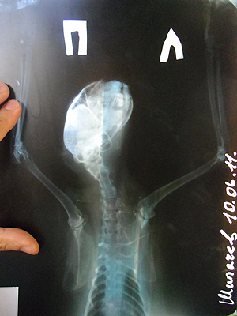

В позапрошлую пятницу наконец дали горячую воду. Принял полноценный душ, сел у окна за комп, посмотреть что нового в лентах. Открыл настежь окно. Тёплый летний вечер. Не заметил как за спиной к открытому окну подошла кошка.
Услышал только стук. Видимо пошла по металлическому откосу и соскользнула. Ударилась о кондиционеры этажом ниже и дальше. Этот стук я и услышал. Сразу понял, посмотрел по сторонам, побежал вниз. Лежала на траве. Мяукала. Сбегал домой за простынёй. Быстро сбегал. Посмотрел в ДубльГисе телефон ветеринарки. Круглосуточная ветеринарная клиника в Кемерово работает только на Нахимова, 28. Телефон 64-20-20.
Взял ключи и документы. В машине нужно почистить бензонасос, не чистил уже года 2. Поэтому, когда бензина остаётся немного, бывает что не заводится. Редко очень, но бывает. Не завелась. Времени 23:30. Позвонил брату, далеко, не успеет. Позвонил другу, который поближе. Сказал выезжает. Пока ждал минут 5 подъехал другой друг, сосед. Подъехавшего уже друга отправил домой (фиг его знает сколько это займёт времени)
Взял ключи от машины соседа и вместе с женой поехали на Нахимова. 60 км/ч ехать ночью в клинику невыносимо тяжело. Но отсутствие документов на машину нарушению скоростного режима точно не способствовало. С дороги ночью клинику «Ника» почти не видно. Проехал мимо, вернулся. Там укол какому-то коту ставят, нервы. Занёс. Заполнили карточку. Адрес, порода — нет, имя — Соня, возраст — лет 14.
Пощупали. На рентген. Три снимка делали часа полтора. Орёт, часто дышит. Сотрясение. Переломов нет. Что с внутренними органами неясно (будет видно в течение 5 дней). Могут быть разрывы сухожилий, но выявить нереально. «Людям в таких случаях делают МРТ (магнито-резонансную томографию)».

Вкололи обезболивающее, кровоостанавливающее, витамины. Утром сами укол сможете поставить? Ага.
Тысяча шестьсот. Завтра на приём. Домой вернулись около трёх.
Лежит дома на полу. Не ходит. Переживает. Неясно.
На утро со здоровьем кошки ничего плохого не случилось, хорошего впрочем тоже. Лежала на боку и смотрела. Съездили на УЗИ в ветеринарную клинику «Ирбис» на Октябрьском. Узист правда уже ушёл домой (время уже было «после работы»), но обещал вернуться, и вернулся. Жирная говорит у вас кошка. Что-то наузировал. Но не поймёшь говорит, то ли жир, то ли жидкость. Приём, уколы. УЗИ — 400 рублей. Приём — 180 + иньекции. Назавтра опять приём. Врач вертел-крутил кошку, нашел перелом двух рёбер, ну и говорит отрыв мышц плеча.
Потом были ещё приёмы, уколы, капельницы. За неделю лежания на кухне и поездок кошка не выпила ни капли воды. Спустя дней 5-6 начала потихоньку, лёжа есть. В клинику ездить перестали.
При падении с высоты кошки обычно всё-таки выживают. Сложно им приходится если на пути падения встречаются, к примеру, бельевые верёвки. Сталкиваясь с ними, кошка теряет ориентацию, к тому же поучает повреждения внутренних органов.
Переломы это плохо, но незаметный внешне разрыв сосуда внутри гораздо хуже. Оперировать животных, кстати, сложно еще и из-за того, что в случае потери крови лить им, в отличие от людей, нечего.
Спустя две недели кошка, прожившая у нас 14 лет, уже запрыгивает на диван.